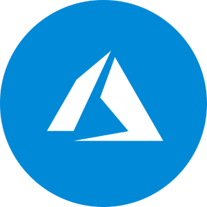

Please sideload your add-in to see app body.
Build an Azure Devops Task/Bug
Create bug ticket
Create task ticket
Select parent item:
Enter new ticket title:
Assign ticket:
Bill Moody
Jeff Haupt
Jonathan Hebert
Julien Miranda
Kheran Joseph
Thomas Sniadecki
Tugce Sahan
Attached files to upload:
Create Ticket